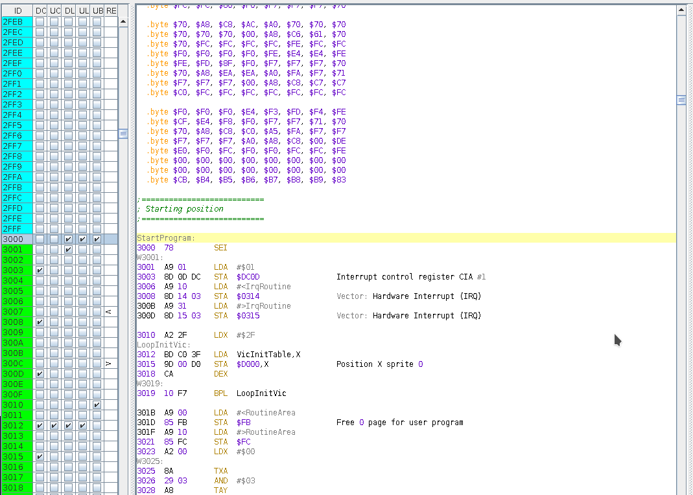

If you open a MUS file, the preview area show a human redable form of the tune, divided by each voice and reporting the author comments if present. No source code are given as this is intented to use for studing how a tune were composed in SIDPlayer.
In case of SID or PRG file, the preview showes the generated source code in an intermediate form where emphasy is given to the value of a location, even if it is of an peace of code that are disassembled.
When you study a code a simple byte could be a reference to a memory location as a low/high part so it is important to be able to catch those situation in a easy way.

Essentially the memory are marked as of data are showed as a sequences of .byte values (grouped in a way you can choose in options), while instructions (memory location marked as of code) are decode with their memory locations and bytes values before the true assembler representation. Even row comments appears just after the instructions.
Instead global comments (used to give a better view structure to the source) are visible.
Labels (automatic or user manual) are already present and used inside the instructions.
A very usefull function is that when you click into a memory area (address or in label format), the memory area table will be positionating to that memory location.
You can also select with mouse a region of this source and the corresponding area in memory is selected, so you can mark all that selection in the form you want.
With shift+click you will select the region between the first click and this one
From version 2, every line into previes or source can be clicked and the memory will be positionate to the rigt position.
Else, with CTRL+double click, it automatically open modify dialog for: comments, block comments, labels.